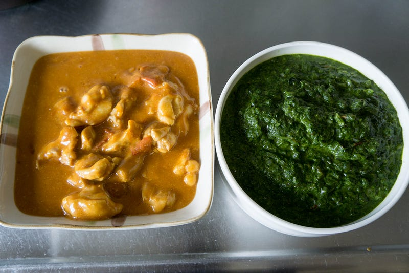
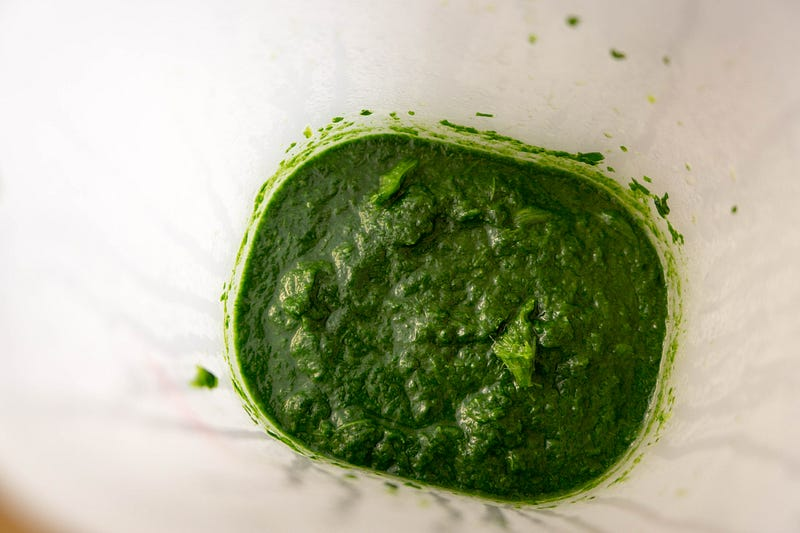
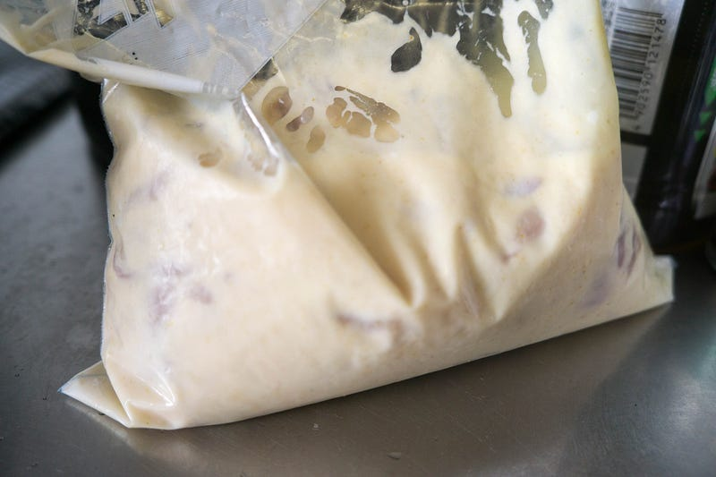
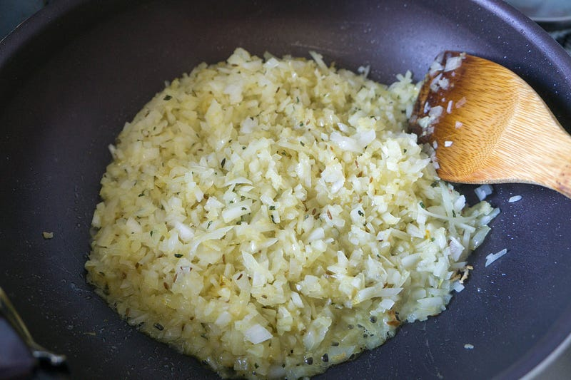
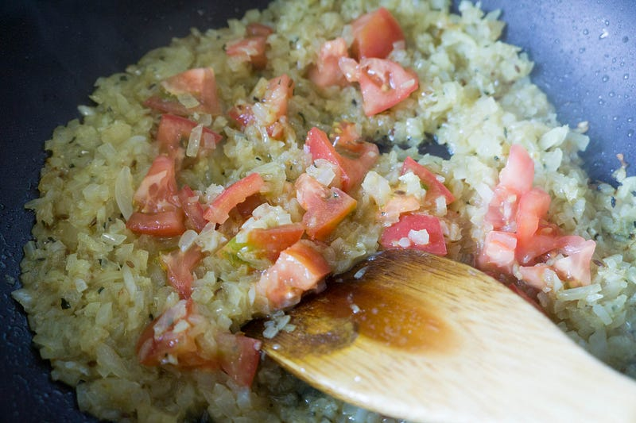
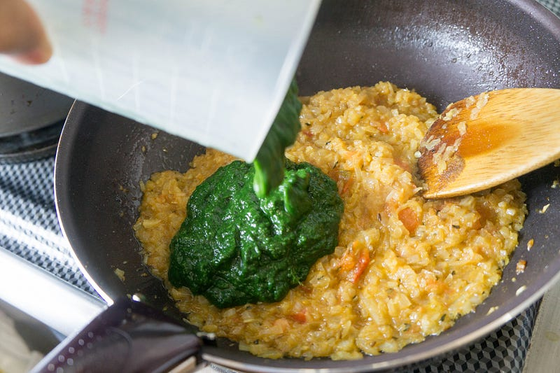
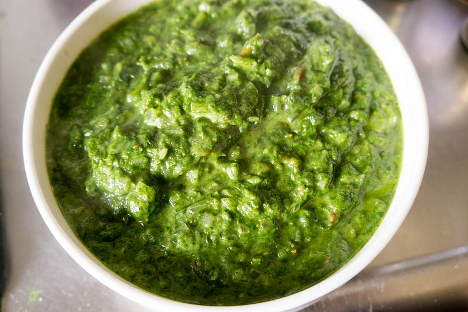
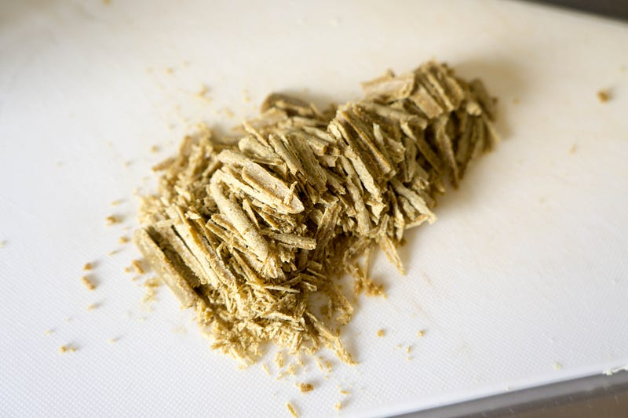
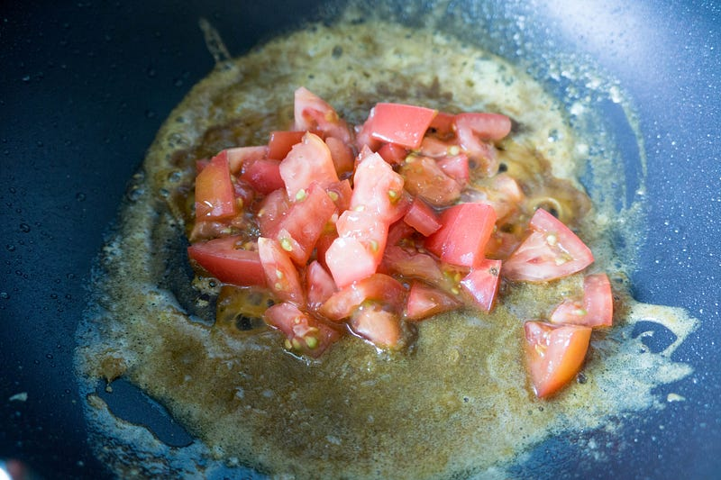
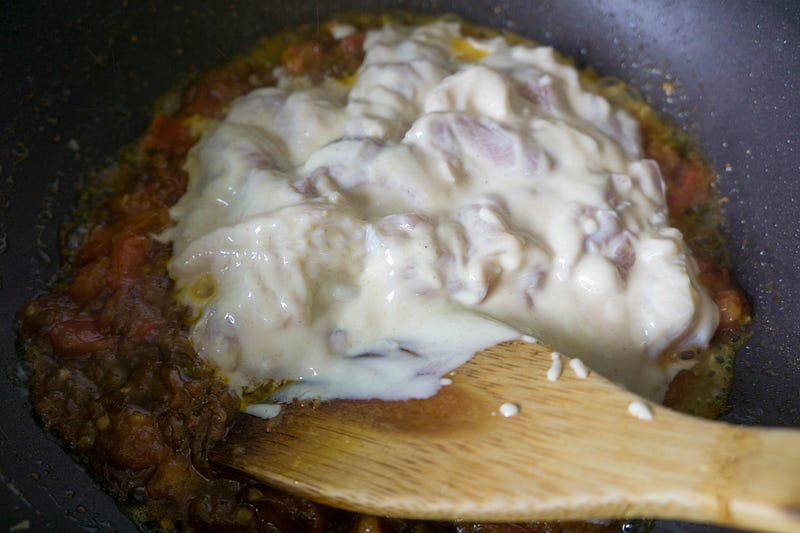

インドカレーっぽい何かを作る
インドカレーっぽい何かを作る
今回は低温調理じゃないよ！
前回はこちら
アメリカに住んでた時に大好きだったのがインド料理のビュッフェスタイルのレストランだった。特にpalak paneer（パラク・パニール。ほうれん草カレー）が大好きだったので、モリモリ食べていた。

日本ではサグカレーという名前で通っている事が多いみたい。一応あちこちの店で食べることはできるが、モリモリ食べるには少々量が足りないのと、なんかすっっっっっっごい生クリームの量を多くして食べやすくしてるところが多くて、俺の求めてる繊維質の塊みたいなのが食べられない。
しかし何故かいままでこれを自分で作ろうとしなかった。で、この間とある会員ポイントの特典としてバーミックスを手に入れてほうれん草のペーストを気軽に作れるようになったので試してみたところ予想以上に簡単だったし、おいしかったので、また作ってみた。
今回はほうれん草カレーとバターチキンを作る。
まず僕も含めたこの世のバーミックス初心者に忠告だけど、バーミックスを手に入れたら、縦に長くて傷が付いても大丈夫な（プラスチック製とか）の入れ物を用意しよう。
家にそれらしきモノがあればそれでもいいけど、とにかくこのバーミックスの機能にあった形の容器がないと利便性がマイナス80%くらい（当社比）になる。よくわからない場合は素直に公式っぽいヤツを買おう。
カレーに戻る。あちこちのレシピをチラ見したところ、パラクはほうれん草の事を指すみたいだが、サグは青菜、その中でもからし菜の事を指すことが多いらしい。ということはまぁ、基本的には青菜ならなんでも美味しいのだろう。ほうれん草は柔らかいから使いやすいんだろうな。
今回はほうれん草を一把。最初から小さめに切って、ちょっとグダグダなくらい茹でてバーミックスでガーっとした。

チキンのほうもこのタイミングでカレー粉とヨーグルトに漬けてなんちゃってタンドリー風味にしておく。まぁ1時間とか置いておけば充分かと。

あと、ここでタマネギをみじん切りにしておく。個人的にはパラク・パニールはたっぷり食べたいので、多めにタマネギ2個分。正直これは俺の我が儘なだけなので、通常は1個とかでいいのでは。
下準備が出来たら、カレー作りの開始。
今回これらのカレーの作り方を覚えた際にわかったのはこのインドカレーっぽいものは基本的に以下の4つのステップでできあがるということだ：
- 香辛料を油で炒める
- タマネギないしトマトを炒める
- 残りの具材を炒める
- 味の調節をする
簡単だ。だいたいどのカレーでもこの進行は変わらない。
まずパラク・パニール。油を多めに引いて、多めのおろしないしみじん切りのニンニク、ショウガのすりおろしを炒め、ついでにクミンも炒める。今回は家にあったクミンシードをたっぷり入れた（好物）。クミンシードは焦げやすいの火加減に注意。
カレー粉も良きところで加えて炒める。カレー粉はケチらないように。カレー粉が少ないとなんかうまくないので注意。なおこの次の写真ではカレー粉がなくなりそうだったので、カレー粉をケチってる。あとで結局追いカレー粉するはめになった。
次にタマネギを入れて炒める。このタマネギを本格的な欧州カレーを作るときみたいに飴色にするレシピもあるけど、インド人の書いたとあるレシピには「そんなことは必要ねぇ」と書いてあったし、要は好みな気がする。自分は「しっかり火が通ってればよし」という派なので、飴色にはしない。

良い感じになったら次はカットトマトを入れる。缶詰とかのやつを入れたほうが火の通りが早いが、別に生トマトを切って炒めるだけで問題なし。皮を気にするなら湯むきしておこう。

良い感じにトマトの正体がなくなったら、ほうれん草投入。ほうれん草を茹でる時に重曹を入れておくと緑色が鮮やかになるらしいよ。面倒くさいからやらないけど。

あとは塩とかで味の調節をしながらお好みのところまで煮詰めるだけ。塩味は単体で食べて一番おいしい量よりほんの少し多めに入れておくとあとでご飯と一緒にした時にうまい。
以下の画像では最後に隠し味程度に少しだけ生クリームを入れたあと。食べるときにはモッツァレラチーズとかをサイコロ切りにして、一緒に盛ると良い。チーズとめちゃくちゃあう。

作り方は上記の通りで、筆者の好みのパラク・パニールを作るのに気をつけないといけないポイントは以下の3つだけ
- ニンニクはたっぷり目に入れること
- クミンがこのカレーの特色なので、必ず入れて、お好みで量を加減すること（自分の場合は多め）
- カレー粉は必要充分いれること
このカレーには見ての通り、基本的に動物性の原料は一切入ってないけど、香辛料のおかげでガツっとした食感を得られる。大変おすすめなカレーだ。
パラク・パニールだけでも充分美味しいが、一食こればっかり食べてると飽きる。特に筆者は問題を感じないが、家族にはちょっと辛い。そういうわけで子供のことも考えて一緒にバターチキンを作る。
先に書いたとおり、基本の作り方は一緒。まずスパイスを炒める。バターチキンのレシピを見てると相当な量のバターを使って香辛料を炒めたり、追いバターをしてるのが多い。でも子供にそんなにバター食べさせるのもなぁ…ってことでこのレシピは最後にバターをちょいと載せるだけ。
この香辛料を炒める際、ニンニクの量はパラク・パニールの時より少なめ。というか、これのほうが基本で、パラク・パニールはあっさりしてるから量を多めにせざるをえないのだろう。
スパイスを用意しているところでカレー粉が売り切れなのに気づいた。この暑い中また買い物にいきたくないので、冷凍庫にあった子供用のバーモントカレー甘口のルゥを削って代用とする。
カレールゥって削るとこんな感じですよ。知ってました？

焦げないように注意しつつ、にんにく、ショウガ、カレー粉を炒める。良きところでトマトを追加。

これだけだとトマトの力が若干弱いので、あとでトマトピューレを追加した。トマトの正体がなくなったら、タンドリーチキンもどきを投入。

チキンに火が通るまで炒めた後、塩・砂糖で味の調整。店で食べるバターチキンはかなり甘い。あれを目指すなら思い切りよく砂糖を追加する必要がある。今回も一応子供向けなので甘めに作った。最後に生クリームを一回し、そしてバターを一かけ。バターの香りがないとこの料理は完成しない。
作り終わってから思ったけど、これカレースパイスをいれずに肉を牛肉にしたらビーフストロガノフじゃね？
というわけでできあがり。今回はカレールゥを使ってしまったのでバターチキンの色が日本のカレーっぽいが、本当はもっと淡い赤色になる。
食べる時にパラク・パニールには前述の通りモッツァレラチーズのサイコロ切りを入れて提供。バターチキンには彩りに生クリームをたらして出すと店のアレっぽくなる。
普通のジャパニーズカレーにもそれぞれの家庭ごとの味があるように、インドカレーもみんな適当にアレンジするとよいと思う。